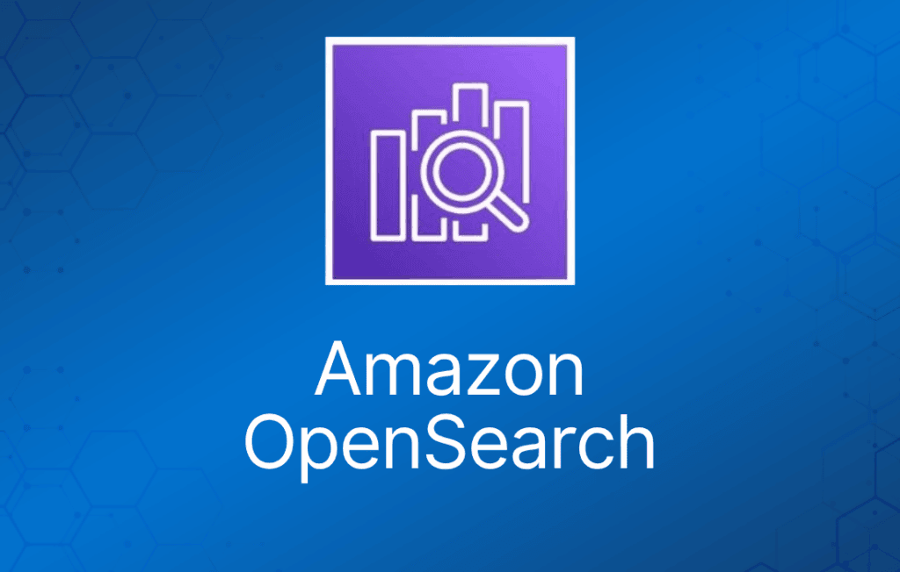
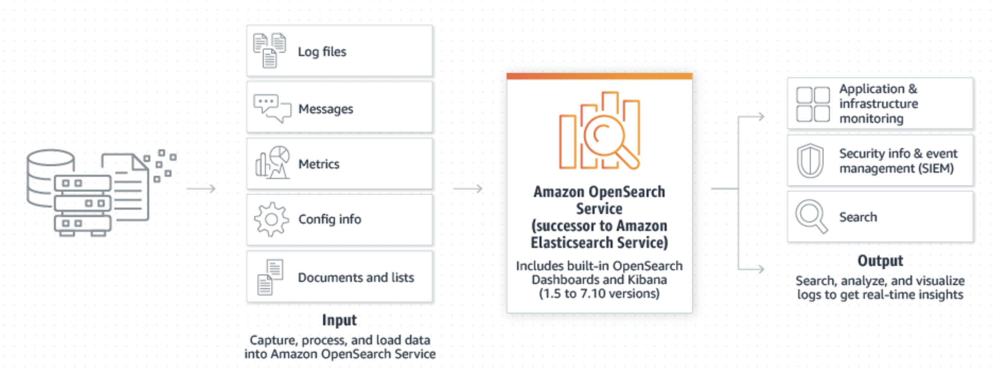

Amazon OpenSearch Service 是 Amazon Elasticsearch Service 的继任者。
Amazon OpenSearch Service 是一套基于 Elasticsearch 的开源分布式搜索与分析套件。
Elasticsearch 是一个构建在 Apache Lucene 之上的分布式搜索与分析引擎。
Elasticsearch 是一个很流行的搜索引擎，常用于日志分析、全文搜索、安全情报、业务分析和运营智能等场景。
使用 OpenSearch，你可以交互式地进行日志分析、实时应用监控、网站搜索、性能指标分析等。
你可以为 OpenSearch 集群从多种开源引擎选项中进行选择。
选项包括最新版本的 OpenSearch 以及多个版本的 ALv2 Elasticsearch。

部署与监控
OpenSearch 集群可以通过 AWS Management Console、API 或 AWS CLI 创建。
需要指定实例数量、实例类型和存储选项。
支持原地升级（in-place upgrade），无需停机。
提供内置的监控和告警功能，并支持自动通知。
你可以使用 Kibana 或 OpenSearch Dashboards 以及 REST API 来配置告警。
通知可以通过自定义 webhook、Slack、Amazon SNS 和 Amazon Chime 发送。
OpenSearch Service 支持多种查询语言，例如：
- Domain-Specific Language (DSL)。
- 通过 OpenSearch SQL 使用 SQL 查询。
- OpenSearch Piped Processing Language (PPL)。
OpenSearch 可与以下开源工具集成：
- Logstash。
- OpenTelemetry。
- ElasticSearch API。
在 Amazon VPC 中运行 OpenSearch
OpenSearch Services 的 domain 可以启动到 Amazon VPC 中。
使用 VPC 可以实现 OpenSearch Service 与 VPC 内其他服务之间的安全通信。
以下是 VPC domain 与公有 domain 的一些区别：
- 由于逻辑隔离，位于 VPC 内的 domain 比使用公有终端节点的 domain 多一层安全防护。
- 公有 domain 可以从任何联网设备访问，而 VPC domain 则需要某种形式的 VPN 或代理。
- 与公有 domain 相比，VPC domain 在控制台中显示的信息更少。具体来说，Cluster health 标签页不包含 shard 信息，也没有 Indices 标签页。
- domain 终端节点的形式不同（https://search-domain-name 对比 https://vpc-domain-name）。
- 你无法对位于 VPC 内的 domain 应用基于 IP 的访问策略，因为 security group 已经在执行基于 IP 的访问控制。
请注意以下限制：
- 如果你在 VPC 内启动了一个新 domain，之后无法再切换为使用公有终端节点。反过来也一样。
- 你可以选择在 VPC 内启动 domain 或使用公有终端节点，但两者不能兼得。
- 你无法在使用 dedicated tenancy 的 VPC 中启动 domain，必须使用 tenancy 设置为 Default 的 VPC。
- 将 domain 放入某个 VPC 后，无法将其移到另一个 VPC，但可以更改 subnet 和 security group 设置。
- 要访问位于 VPC 内的 domain 的默认 OpenSearch Dashboards 安装，用户必须能够访问该 VPC。
ELK Stack
ELK 是一个缩写，代表一组流行的项目组合：Elasticsearch、Logstash 和 Kibana。
ELK stack 让你能够聚合来自所有系统和应用的日志，分析这些日志，并创建可视化图表。
ELK 适用于可视化应用和基础设施监控数据、故障排查、安全分析等场景。
安全性
OpenSearch Service domain 提供静态数据加密（encryption at rest）。
使用 AWS KMS 存储和管理加密密钥。
加密采用 AES-256。
还使用 TLS 1.2 加密节点间通信（node-to-node communication）。
节点间加密是可选的，可以通过控制台、CLI 或 API 启用。
节点间加密一旦启用就无法禁用。如需关闭，必须从未启用该设置的快照创建一个新 domain。
Amazon OpenSearch Service 支持三种类型的访问策略：
细粒度访问控制（fine-grained access control）为 Amazon OpenSearch Service 提供了更多能力。
细粒度访问控制具有以下优势：
- 基于角色的访问控制（role-based access control）。
- 索引、文档和字段级别的安全性。
- OpenSearch Dashboards 多租户（multi-tenancy）。
- OpenSearch 和 OpenSearch Dashboards 的 HTTP basic authentication。
OpenSearch Service 支持通过 SAML 和 Amazon Cognito 进行身份验证。